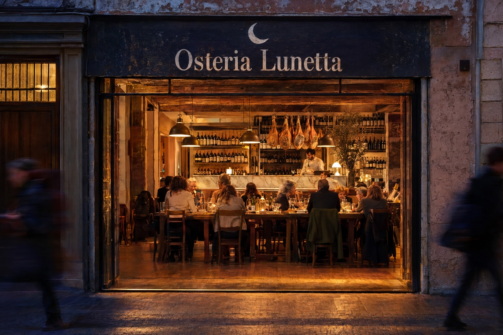

Osteria Lunetta

A lively wine bar and osteria with a long communal table and cured meats hanging above the counter. Coffee is an afterthought done well: espresso and a single decaf option from a compact machine behind the bar.

A lively wine bar and osteria with a long communal table and cured meats hanging above the counter. Coffee is an afterthought done well: espresso and a single decaf option from a compact machine behind the bar.